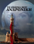
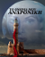

Δικαιωματα

Το παρόν έχει κατοχυρωθει με τις αριθμό 15206/2019, και 15248/2019 πράξεις κατάθεσης της συμβολαιογράφου Μαρίας Ι Γυφτεας.

Το παρόν έχει κατοχυρωθει με τις αριθμό 15206/2019, και 15248/2019 πράξεις κατάθεσης της συμβολαιογράφου Μαρίας Ι Γυφτεας.